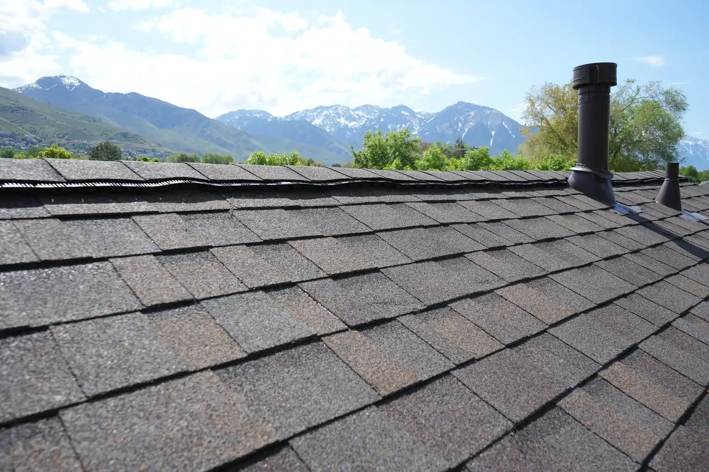

Attic ventilation is a steady flow of outside air through the attic: in low at the eaves, out high near the ridge. It keeps the roof deck cold and dry in winter, lets summer heat out, and protects the shingles and sheathing from moisture. Most homes need about 1 square foot of net vent area for every 150 to 300 square feet of attic floor, split between intake and exhaust.
Why an attic needs to breathe
An attic sits between two very different climates. Below it is a heated, lived-in house that puts moisture into the air every day from cooking, showers and breathing. Above it is a roof deck that, on a January night along the Wasatch Front, can be far below freezing. If warm, moist air reaches that cold deck and stays there, it condenses. Over a few winters that means damp sheathing, mildew and rusted fasteners, problems you won’t see from the yard until they show up as stains on a ceiling.
Ventilation solves this by replacing attic air with outside air. Cold, dry winter air keeps the deck close to the outdoor temperature, and summer airflow carries off some of the heat that builds under the shingles.

Intake and exhaust: how the air moves
A working system has two halves. Intake vents sit low, usually in the soffits under the eaves. Exhaust vents sit high: a continuous ridge vent, or individual box vents near the ridge. Warm air rises, so outside air enters at the eaves, sweeps along the underside of the deck, and leaves at the top.
Two details make or break it. First, insulation must not block the soffits; foam or cardboard baffles hold a channel open between the insulation and the deck. Second, the exhaust has to be fed by intake. A ridge vent over sealed-off soffits moves very little air, and a powered fan with no intake will pull air out of the house instead.
It also helps to keep one kind of exhaust on a roof. A ridge vent combined with a gable vent or a powered fan can short-circuit: the exhaust vents feed each other, and the soffits at the bottom stop doing their job.
How much ventilation a house needs
The International Residential Code sets the baseline in Section R806. The net free ventilating area (the open area of a vent after screens and louvers, printed on the product in square inches) must be at least 1/150 of the attic floor area. It can drop to 1/300 when the attic meets one of the listed conditions, the common one being that 40 to 50 percent of the required area comes from vents in the upper part of the attic, no more than 3 feet below the ridge, with the rest at the eaves.
Here is what that means for an attic with 1,500 square feet of floor:
- At 1/150: 10 square feet, or 1,440 square inches of net free area.
- At 1/300: 5 square feet, or 720 square inches, about 360 high and 360 low.
Utah adopts the IRC with state amendments, and your city’s building department has the final word on what applies, so treat these numbers as the starting point, not the last word. On a re-roof, a roofer should check what’s there now, count the net free area, and say on the estimate what will change.
Ventilation and ice dams
Ice dams are a familiar sight in Utah neighborhoods after a snowy week: a ridge of ice along the eaves with water backed up behind it. According to the Building America Solution Center, run by the Pacific Northwest National Laboratory for the U.S. Department of Energy, ice dams need three things: snow on the roof, heat escaping from a poorly air-sealed or poorly insulated attic, and freezing temperatures. Heat from the house melts the snow high on the roof; the water runs down to the cold eaves and freezes there.
The fix starts below the roof. Sealing the gaps where house air leaks into the attic (around light fixtures, the attic hatch, plumbing and duct chases) and adding insulation stop most of the heat. Ventilation then keeps the deck cold and even, so the snow melts from the sun, not from the house. Ventilation alone won’t cure an attic that leaks heat, and an ice and water shield membrane at the eaves is still the roof’s backup when ice does form.
Five signs your attic isn’t venting well
- 01Frost or damp on the underside of the roof deck
Visible from the attic on cold mornings. Warm, moist house air is reaching the cold deck and condensing.
- 02Heavy icicles and ice dams at the eaves
Snow melting high on the roof and refreezing at the cold edge, often a sign of heat escaping into the attic.
- 03Dark stains or mildew on the sheathing
Moisture that keeps coming back. Look near the eaves and around bathroom fan ducts.
- 04Rusty nail tips poking through the deck
Another moisture clue: the nails are the coldest metal in the attic and collect condensation first.
- 05An upstairs that bakes all summer
A hot attic radiates down through the ceiling. Ventilation helps, but insulation does most of the work here.
If you see more than one of these, it’s worth having someone look at the intake, the exhaust and the insulation together.
Old swamp coolers and other holes in the system
Many older homes along the Wasatch Front still have a swamp cooler on the roof, or the patched opening where one used to be. A cooler opening, a bathroom fan venting into the attic instead of outside, or a kitchen duct that ends short of the roof all add moisture or upset the airflow. When we remove a swamp cooler, the opening is repaired and sealed, and it’s a good moment to look at how the attic is vented.
The best time to fix it
Ventilation can often be improved on an existing roof: clearing blocked soffits, adding baffles, or swapping a few box vents. But a roof replacement is the easiest time to get the whole system right, because the deck and ridge are open and a continuous ridge vent can be cut in. If you’re not sure where your attic stands, it’s part of our free roof inspection.
Questions
01How much attic ventilation does a house need?
Under the International Residential Code, the net free vent area should be at least 1/150 of the attic floor area, or 1/300 when certain conditions are met, such as putting 40 to 50 percent of the vent area high on the roof within 3 feet of the ridge. Your city’s building department has the final word on what applies to your home.
02Should intake and exhaust be equal?
Close to it. The 1/300 option in the code expects roughly half the vent area high and the rest low at the eaves. An attic with lots of exhaust and little intake tends to pull air from the house instead of from outside.
03Will more ventilation stop ice dams?
Not by itself. Ice dams start with heat escaping from the house into the attic. Air sealing and insulation come first; ventilation then helps keep the roof deck cold so the snow doesn’t melt unevenly.
04Can ventilation be fixed without a new roof?
Often, yes: blocked soffits can be cleared, baffles added and vents replaced. A roof replacement is simply the easiest time to get the whole system right, because the ridge and deck are open.
05Do you check ventilation during an inspection?
Yes. Vents are part of our free roof inspection, along with shingles, flashing, valleys and penetrations.
Sources
- International Code Council, International Residential Code, Section R806 (Roof Ventilation): iccsafe.org
- Building America Solution Center (PNNL / U.S. Department of Energy), Attic Air Sealing, Insulating and Ventilating for Ice Dam Prevention: basc.pnnl.gov